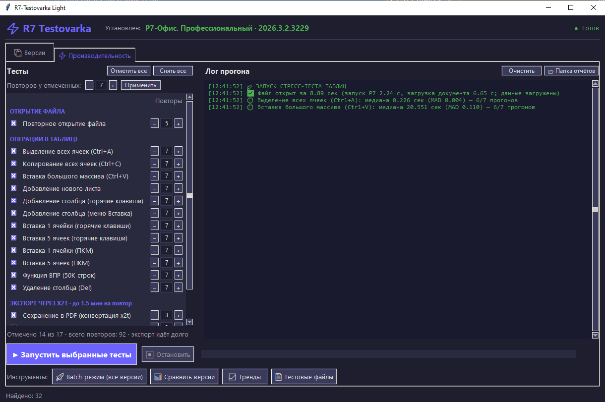
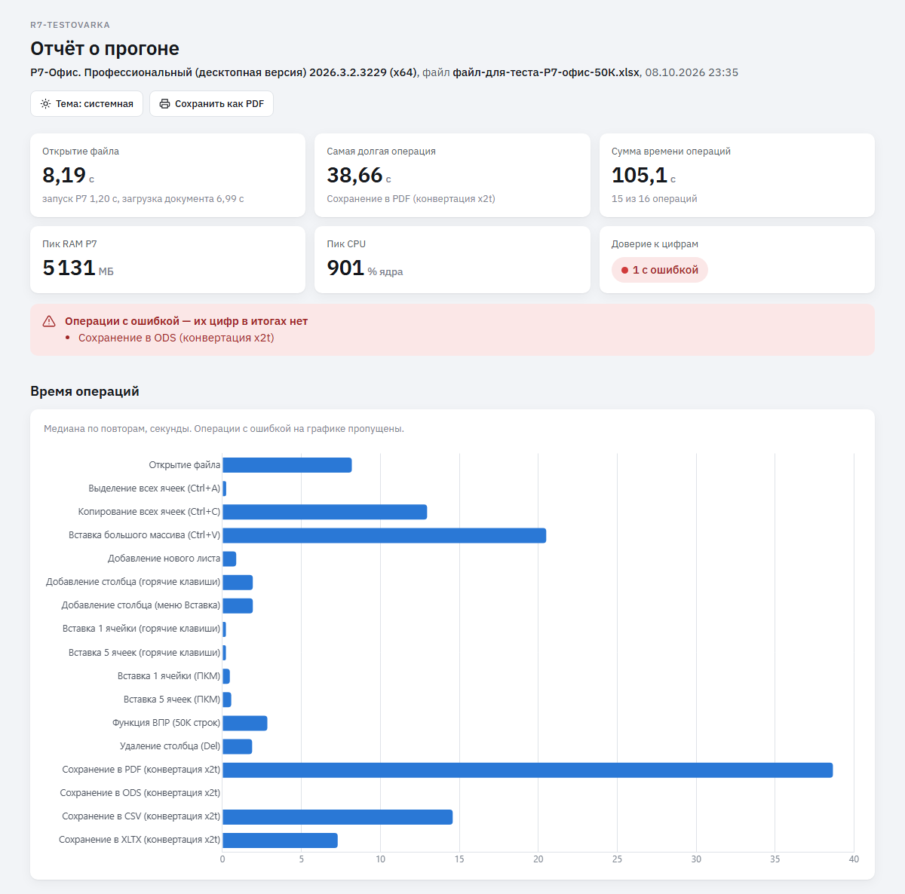
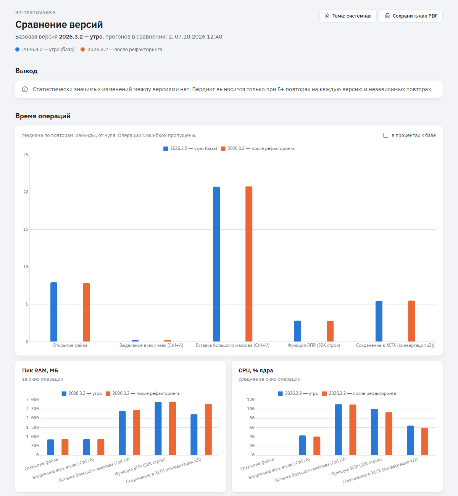

Лист 01Инструмент замеров · Р7-Офис07.10.2026
R7-Testovarka
Меряет, как быстро работает табличный редактор Р7-Офис. Сравнивает версии и показывает, где стало медленнее.
Тестов17
Повторов на тест3–7
Точность конца операции~1 мс
Живых прогонов подряд30 / 30
Python · Tk · CDPgithub.com/fedintsevqq/r7-testovarka
Лист 02Зачем
Наивный секундомер меряет скрипт, а не Р7
Паузы библиотеки
0,5 с
Одно сочетание клавиш через pyautogui стоило полсекунды сна, что бы ни делал редактор.
Конец операции
нажатие
Клавиша лишь ложится в очередь. Время «операции» было временем самого скрипта.
Соседние тесты
грязь
Лист и выделение оставались от прошлого теста, повторы шли на изменённом документе.
Отсюда правило: цифра отражает работу Р7, а не инструмента02 / 10
Лист 03Метод
Секундомер стоит, пока редактор занят
Операция идёт через api редактора по CDP. Конец берём по ответу самого редактора: он 0,3 с подряд отвечает на пинг быстрее 10 мс.
⏱ ЗАМЕР
Подготовкалист, выделение, буфер
Операцияasc_Paste() и подобные
Пинг 0,3 средактор свободен
Откат правкиследующий повтор чистый
Свои паузы вычитаются. Ожидание меню или диалога копится в _pace и уходит из замера.
Неподтверждённое не считается. Редактор не сообщил об изменении документа: повтор вне медианы.
Медиана и MAD. Первый повтор отбрасывается как прогрев, если после него остаётся три.
Без CDP: окно отвечает и CPU ниже 25 % ядра · экспорт: время записи файла03 / 10
Лист 04Открытие файла
Открытие делится на две фазы
Перед каждым открытием сбрасывается файловый кэш Windows: файл читается с диска, как первый раз после перезагрузки.
Всего 8,89 с
2,24 сзапуск Р7
6,65 сзагрузка документа · файл 50 тысяч строк
Запуск Р7: от старта процесса до появления окна. Показывает старт самого редактора, от файла почти не зависит.
Загрузка документа: от окна до готовности. Чтение xlsx, конвертер x2t, отрисовка листа. Готовность видна по кнопке «Жирный» через CDP.
Медленный диск C: стенда иногда добавляет 3–5 с, такие открытия помечены «диск»04 / 10
Лист 05Что меряем
17 тестов, один набор для всех режимов
1
Открытие
- Повторное открытие файла: сброс кэша, запуск, готовность, закрытие
12
Правка таблицы
- Выделение всех ячеек
- Копирование всех ячеек
- Вставка большого массива
- Новый лист
- Столбец: клавиши
- Столбец: меню Вставка
- 1 и 5 ячеек: клавиши
- 1 и 5 ячеек: ПКМ
- ВПР по 50 тысячам строк
- Удаление столбца
4
Экспорт через x2t
- ODS
- CSV
- XLTX
r7_ops.SpreadsheetOps: вкладка, Batch и тест своего файла берут одни и те же операции05 / 10
Лист 06Режимы работы
Одно окно, пять инструментов
- Производительность: отмеченные тесты на установленной версии.
- Batch: удалить версию, поставить следующую, замерить. И так по списку.
- Свой файл: открытие и ВПР на любом xlsx, генератор до 1 000 000 строк.
- Сравнение и тренды: от 2 до 8 прогонов на странице, история каждой операции.

Тёмная и светлая тема в стиле Windows 11 · один прогон за раз06 / 10
Лист 07Отчёт прогона
Отчёт честно говорит, чему не верить
- Плитка доверия: зелёная, только если все повторы подтверждены.
- Метки: таймаут, без подтверждения, зависимые повторы, диск.
- Условия прогона: фоновая нагрузка, батарея, чужое окно перехватило фокус.
- Три файла: HTML для людей, Excel, JSON для сравнения.

Пик CPU в процентах ядра и в доле машины: «451 % ядра, 28 % всех 16 ядер»07 / 10
Лист 08Сравнение версий
Регрессия, только если она доказана
Правило вердиктаКритерий Манна-Уитни p < 0,05 и разница больше 10 %. Не меньше пяти повторов на версию.
- Страница начинается с вывода: сколько регрессий и ускорений, где.
- Схема замера в каждом JSON: отчёты разных методик не смешиваются.

Сейчас схема 9 · тренды строятся по всем сохранённым прогонам08 / 10
Лист 09Надёжность
Проверки, которым можно верить
30/30
живых прогонов подряд на настоящем Р7, без провала
1276
юнит-тестов, Р7 для них не нужен
88%
покрытие, CI не пропустит ниже 85 %
0
функций длиннее 150 строк
Клавиши только в Р7Перед каждым нажатием проверка, что впереди окно процесса Р7.
Никакого слепого вводаДиалог не открылся: исключение, а не Enter в чужое окно.
«Не сохранять» по текстуЭталонный файл не перезапишется кнопкой по умолчанию.
Р7 закрывается всегдаШтатно, по «Остановить» или после ошибки.
CI: pytest на Python 3.11 и 3.14, pyflakes, сборка .exe с самопроверкой09 / 10
Лист 10Итог
Запустить можно за минуту
# установка
> python -m venv .venv
> .venv\Scripts\pip install -r requirements.txt
# запуск от имени администратора
> .venv\Scripts\python r7_Testovarka.py
# проверка на живом Р7, ~1,5 мин
> set R7_LIVE=1
> pytest -m live tests/live
> python -m venv .venv
> .venv\Scripts\pip install -r requirements.txt
# запуск от имени администратора
> .venv\Scripts\python r7_Testovarka.py
# проверка на живом Р7, ~1,5 мин
> set R7_LIVE=1
> pytest -m live tests/live
Известно и вне кода: экспорт рабочего файла в ODS роняет x2t (баг Р7 DE-8304).
Стенд: медленный диск C: даёт разброс открытия, инструмент его помечает.
Документация: README со схемами, docs/ по темам, карта кода в CLAUDE.md.
R7-Testovarka · лицензия MIT10 / 10